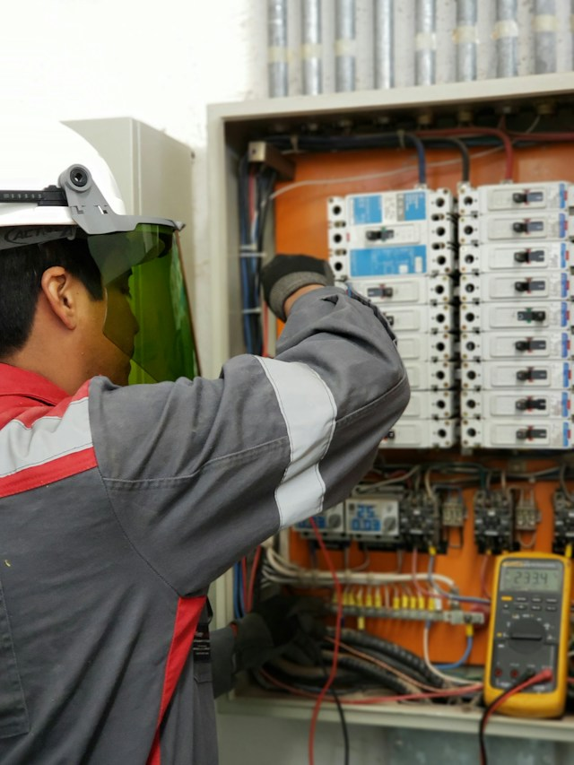
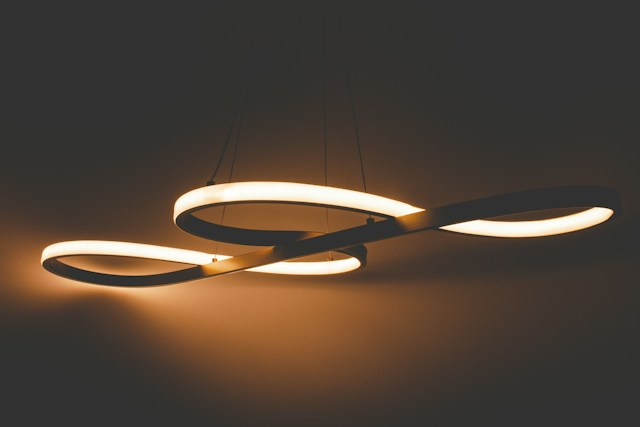

Revisamos, ordenamos y mantenemos tableros eléctricos.

Compromiso con la seguridad y precisión en cada instalación eléctrica.
Instalación de iluminación LED en una oficina
Se realizó la instalación de luminarias LED en una oficina, mejorando la iluminación de los espacios de trabajo y reduciendo el consumo energético.
El trabajo incluyó la revisión de los puntos de conexión, la instalación de las luminarias y la verificación del funcionamiento de los circuitos.

Diseño fluido y luz cálida.
Reparación de enchufes e interruptores en una vivienda
Se atendió una vivienda con enchufes e interruptores con fallas de funcionamiento. Se realizó una revisión de los circuitos, el reemplazo de los elementos dañados y la verificación del correcto funcionamiento de las instalaciones.
El trabajo se dejó ordenado y se entregaron recomendaciones para evitar sobrecargas y mantener la seguridad eléctrica del hogar.